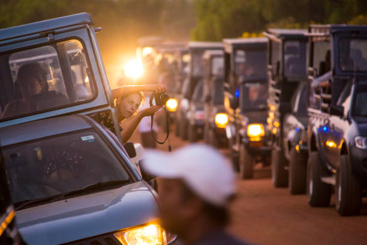
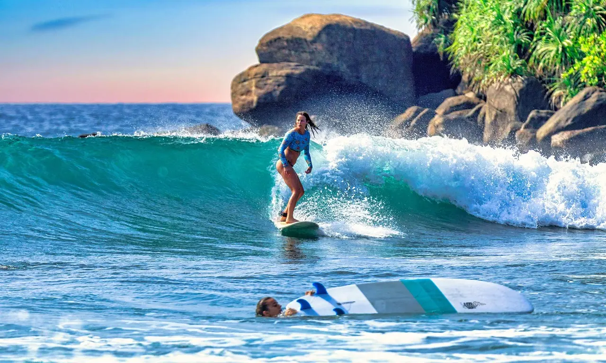
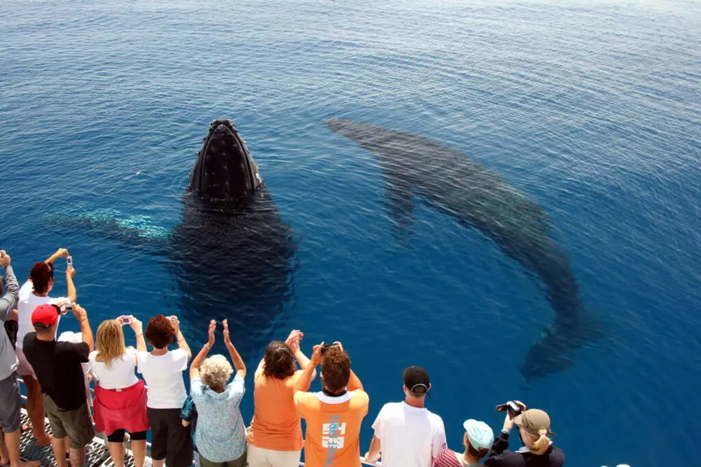

Although the teardrop-shaped island in the Indian Ocean appears to be tiny, It is one of the top exotic holiday spots in the world, offering a wide spectrum of fun, adventure, and romance. Sri Lanka is a destination for exciting things to do, with beaches, hills, rainforests, ancient monuments, culture, history, nightlife, wildlife, and delicious food.
CHECK OUT
Although the teardrop-shaped island in the Indian Ocean appears to be tiny, It is one of the top exotic holiday spots in the world, offering a wide spectrum of fun, adventure, and romance. Sri Lanka is a destination for exciting things to do, with beaches, hills, rainforests, ancient monuments, culture, history, nightlife, wildlife, and delicious food.
EXPLORE
SAFARI

The entry price includes a park guide. These gentlemen, who all appear to have hawk-like wildlife-spotting eyes, are usually quite educated about the park and its inhabitants. However, unless you specifically make a request differently, the entire safari may be a hurry from one elephant herd to the next, with little opportunity to halt and admire the plethora of other, equally amazing species found here.
To get the most out of your safari, inform your chauffeur and guide ahead of time that you want to see more than simply elephants. When you come to a halt at a sighting, ask your driver to turn off the engine so you can hear the chirping of birds instead of the thunder of the 4WD. Also, like in all of Sri Lanka's more popular parks, there are severe difficulties with vehicles overcrowding and disrupting the main attraction animals.
As a general guideline, and for the sake of the animals and the enjoyment of all involved, no more than five cars should be present at any given sighting. If there are too many vehicles, request that your driver draw back and wait, or better yet, go check something else. Drivers and guides are expecting a tip.
READ MORE
Details
Hours -6am-6pm
Price -adult/child US$15/8, service charge per group US$8, vehicle charge per group Rs 250, plus overall tax VAT 15%
SURFING

With its jaw-dropping vistas, gorgeous architecture, and unique animals ranging from leopards to elephants, Sri Lanka is a destination on everyone's radar. But there's another incentive to visit this modest island off India's south coast, when the spacious beaches and sapphire waters can be fully appreciated: surfing.
Because of the seasonal changes that result in one coast being rough while the other is calm, the country is a year-round destination. Rain falls from many directions as well. Waves will always be present someplace. In the south, the best months are November to May; on the east coast, the best months are April to October, when the waves are larger. The beaches of Unawatuna and Hikkaduwa in the southwest, Weligama in the south, and Arugam Bay in the east are the most well-known.
READ MORE
Details
Surfing lessons are simple to acquire in any surf spot through local surfers and can range from Rs.1500 to Rs.2500. This may vary depending on the level of training necessary and your ability to negotiate costs! Foreigners will pay more than locals, with prices starting at roughly $25. However, because there are many persons who may offer courses, it is always preferable to take lessons from a qualified instructor.
WHALE WATCHING

One of the highlights of a fantastic trip to Sri Lanka is whale watching. Blue whales, striped whales, sperm whales, killer whales, humpback whales, fin whales, and more species reside here. The size, mobility, and singing of these massive sea creatures captivate visitors.
Mirissa is a famous destination for travelers from all over the world who want to observe whales up close. Why is Mirissa is an excellent spot for whale watching in Sri Lanka? The explanation is found in the geographical location: because the continental shelf here is the narrowest and the depth reaches 1 km, it is worthwhile to travel several kilometers away from the coast.
READ MORE
Details
Price - excursion - $ 46 per person
The tour cost includes a boat ride to the open ocean and return, as well as a snack while searching. A whale safari typically lasts three to eight hours. If you wish to dive from a boat while wearing a mask, you will have to pay an additional fee ranging from 150 to 500 rupees.
The expeditions begin early in the morning, around 6-8 a.m.
EXPLORE THE CULTURAL HERITAGE